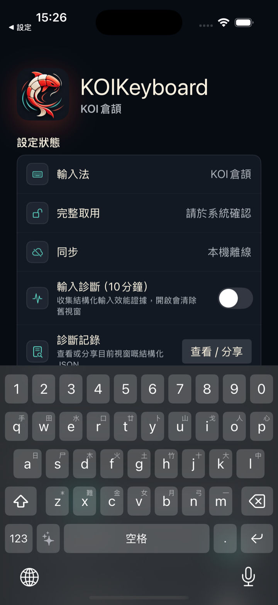
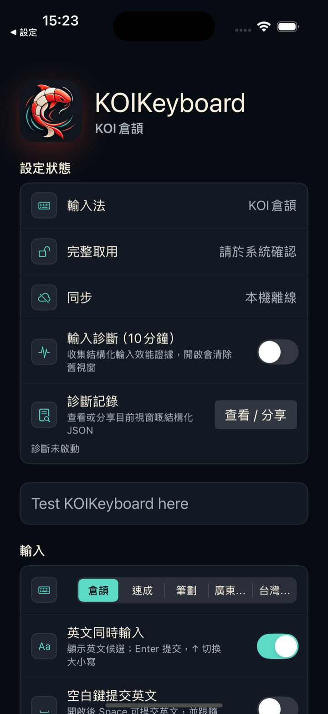

Cangjie
The native key layout, with every keycap showing its English letter and its Cangjie radical together. Candidates are ordered by frequency, and the characters you pick often move towards the front.
KOI Keyboard
Cangjie, Quick, Stroke, Jyutping, Zhuyin — five input methods sharing one keyboard.
Handwriting runs on the device. The typing engine has no networking code at all.
Preparing for releaseKOI is being prepared for App Store review. A download link will replace this notice once it is live.
No more cycling through the system keyboard list just to change input method. All five modes live inside KOI and switch instantly.
The native key layout, with every keycap showing its English letter and its Cangjie radical together. Candidates are ordered by frequency, and the characters you pick often move towards the front.
First-and-last-code input. It shares the Cangjie key layout, so there are no new key positions to learn.
Five-key stroke input with * as a wildcard — forget a stroke in the middle and a star still finds the character.
Full and abbreviated spellings both work, and a tone number narrows the results. Outputs Hong Kong Traditional Chinese.
A dedicated Zhuyin key layout that outputs Taiwan Traditional Chinese.
The same keystrokes are decoded into Chinese and English candidates at once, so typing English needs no keyboard switch. Disabled in Stroke mode.
Both of these are captures of KOI running. Neither is a mock-up.
Actual capture

Actual capture

Four ways of entering a code can be mixed inside a single composition. Change your mind halfway through and you do not have to clear it and start again.
Tap key by key, glide through the whole code in one stroke, or start tapping and finish gliding. Two fingers pressing at once are picked up as well. It all folds into the same composition.
Glide decoding tolerates up to two keys being substituted by a neighbouring key. A finger that wanders slightly does not derail the input.
When you decompose a character wrongly, KOI fills in candidates from near-miss codes and places them after the normal ones. The candidate row never goes blank while you wait.
One press deletes the last code, two presses clear the whole composition, and holding it down accelerates. Swipe left or right on the space bar to move the cursor.
The handwriting recognition model is packaged inside the app. Nothing to download, nothing to connect to, and it writes just as well in aeroplane mode.
KOI uses a Hong Kong Traditional Chinese handwriting model, not a Mandarin or Simplified one. The character shapes you are used to writing are the ones it recognises.
The handwriting area is rendered in Metal as a pool of water: your strokes leave ripples, refraction and waves. The intensity is adjustable in settings, so turn it down if you prefer it still.
Open it when you need it; leave it closed and it is simply not there. Six modes, all handled on the keyboard, without jumping out to another app.
Reads what you have in front of you and decides what to do.
Ask directly, and insert the answer straight into the field.
Draft a reply to the message you received.
Polish, change the tone, translate.
Generate a sticker with a transparent background.
Generate a full scene image.
Credits are spent only when you ask KOI Agent to do something. Everyday typing, candidates and handwriting recognition never cost Credits.
| Action | Credits |
|---|---|
| Reply suggestion | 1 |
| Rewrite and polish | 1 |
| Translate | 1 |
| Ask a question | 2 |
| Generate a sticker | 6 |
| Generate an image | 18 |
KOI's input engine — candidate generation, code decomposition, learning history — contains no networking code at all. What you type does not leave your device.
Text goes out in exactly one situation: you open KOI Agent yourself and send a request. There is no other exception.
The free version already includes all five input methods, handwriting, learning and every core typing feature. Plus adds two features, along with a monthly allowance of Credits.
After a character is committed, KOI suggests the next word or a whole phrase, so there are fewer characters to decompose one by one.
Settings and learning history sync through your own private iCloud. It is off by default, and once it is on you press sync yourself — nothing is sent quietly in the background.